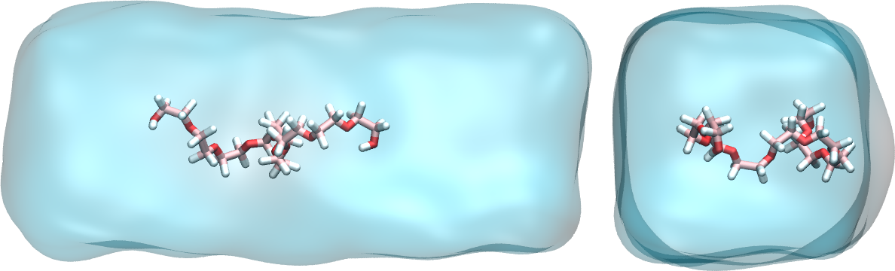
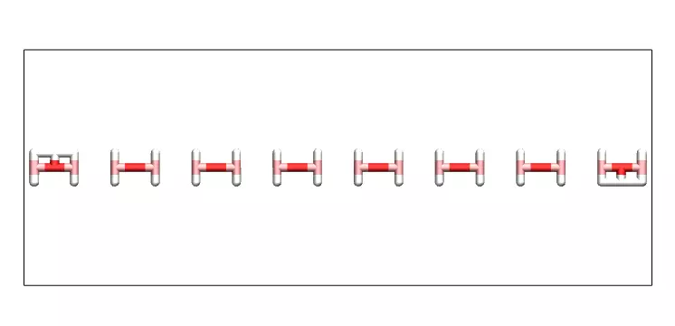
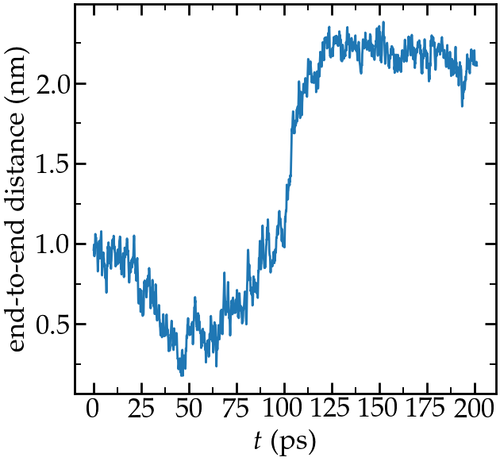
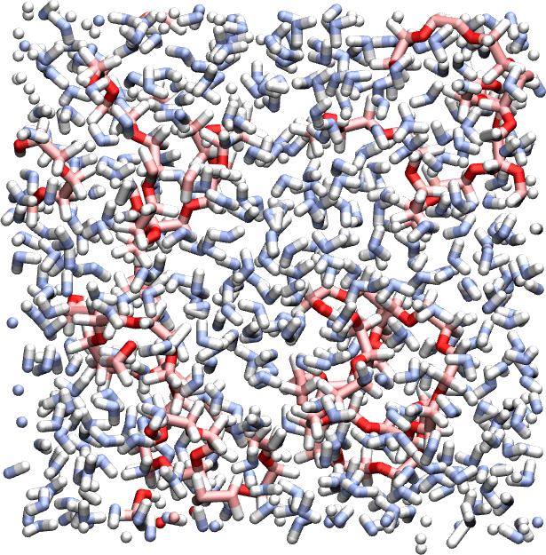
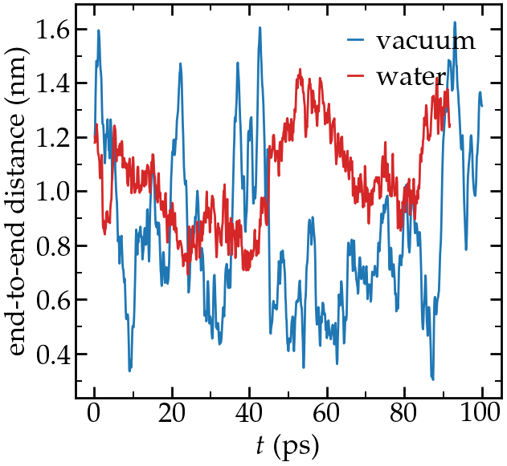

Small Polymer stretched in water
A small PEG molecule is immersed in water and its ends are pulled.
 Figure: a PEG molecule in water. Water is represented as a continuum field.
The objective of this tutorial is to use LAMMPS and create a system made of a small hydrophilic polymer (PEG - PolyEthylene Glycol) in a reservoir of water. Once the system created, a constant force will be applied to the 2 ends of the polymer, and its length will be measured with time.
There are several parts to this tutorial:
- Equilibration of bulk liquid water - First a pure liquid water system is created and equilibrated in the NPT ensemble.
- Equilibration of the PEG molecule - Second, a PEG molecule will be created and a short simulation of the PEG in vacuum will be performed.
- Solvating the PEG molecule - Third, the PEG will be immersed in the water.
- stretching the PEG molecule - Finally, the 2 ends of the PEG molecules will be pulled until it deforms, and some consequences of the deformation will be quantified.
- Going further - Some exercises with solutions are proposed.
Bulk water
Here a rectangular box of water is created, then equilibrated at ambient temperature and ambient pressure.
Create a folder named pureH2O/. Inside this folder, create an empty text file named input.lammps. Copy the following lines in it:
# LAMMPS input script
units real
atom_style full
bond_style harmonic
angle_style charmm
dihedral_style charmm
pair_style lj/cut/tip4p/long 1 2 1 1 0.1546 12.0
kspace_style pppm/tip4p 1.0e-4Explanations: There are many differences with respect to tutorial 01, mostly because here a system with molecules and charges will be modeled (instead of neutral dot particles as in tutorial 01). With the unit style 'real', masses are in grams per mole, distances in Ångstroms, time in femtoseconds, energies in Kcal/mole. With the atom style 'full', each atom is a dot with a mass and a charge. In addition, each atom can be linked by bonds, angles, dihedrals and impropers potentials (for example to form molecules). The 'bond_style', 'angle_style', and 'dihedral_style' commands define the styles of bond angle, and dihedrals used in the simulation, respectively, and the 'harmonic' and 'charmm' keywords impose the potential to use.
With the 'pair_style' named 'lj/cut/tip4p/long', atoms interact through both a Lennard-Jones (LJ) potential and through Coulombic interactions. This style is specific to four points water model, and automatically accounts for the additional massless site. The six numbers are, respectively,
- 1 - the atom type for the oxygen O of the tip4p water,
- 2 - the atom type for the hydrogen H of the tip4p water,
- 3 - the OH bond type,
- 4 - the HOH angle type,
- 5 - the distance from O atom to massless charge,
- 6 - the cutoff in Ångstroms.
Finally the kspace command defines the long-range solver for Coulombic interactions. The pppm style refers to particle-particle particle-mesh.
From Luty and van Gunsteren' paper: "The PPPM method is based on separating the total interaction between particles into the sum of short-range interactions, which are computed by direct particle-particle summation, and long-range interactions, which are calculated by solving Poisson's equation using periodic boundary conditions (PBCs)."
Then, let us create a 3D simulation box of dimensions 8 x 3 x 3 nm\(^3\), and make space for 7 atom types (1 and 2 for the water oxygen and hydrogen, respectively, and 3, 4, 5, 6 and 7 for the PEG molecule (see below)), 6 bond types, 9 angle types, and 14 dihedrals types.
region box block -40 40 -15 15 -15 15
create_box 7 box &
bond/types 6 &
angle/types 9 &
dihedral/types 14 &
extra/bond/per/atom 2 &
extra/angle/per/atom 1 &
extra/special/per/atom 2Let us include a parameter file containing all the parameters (masses, interaction energies, bond equilibrium distances, etc):
include ../PARM.lammpsNext to the pureH2O/ folder, create a blank file called PARM.lammps and copy the following lines in it:
# Mass
mass 1 15.9994 # H2O O
mass 2 1.008 # H2O H
mass 3 12.011 # CC32A
mass 4 15.9994 # OC30A
mass 5 1.008 # HCA2
mass 6 15.9994 # OC311
mass 7 1.008 # HCP1
# Pair Coeff
pair_coeff 1 1 0.185199 3.1589 # H2O O
pair_coeff 2 2 0.0 0.0 # H2O H
pair_coeff 3 3 0.056 3.58141 # CC32A
pair_coeff 4 4 0.100 2.93997 # OC30A
pair_coeff 5 5 0.035 2.38761 # HCA2
pair_coeff 6 6 0.192 3.14487 # OC311
pair_coeff 7 7 0.046 0.40001 # HCP1
# Bond coeff
bond_coeff 1 0 0.9572 # H2O O-H
bond_coeff 2 222.35 1.5300
bond_coeff 3 308.79 1.1111
bond_coeff 4 359.76 1.1415
bond_coeff 5 427.715 1.1420
bond_coeff 6 544.635 0.9600
# Angle coeff
angle_coeff 1 0 104.52 0 0 # H2O H-O-H
angle_coeff 2 50.0000 109.0000 0.0000 0.0000
angle_coeff 3 26.5000 110.1000 22.5300 2.179
angle_coeff 4 45.0000 111.5000 0.0000 0.0000
angle_coeff 5 13.0258 109.4000 0.0000 0.0000
angle_coeff 6 35.5000 109.0000 5.4000 1.802
angle_coeff 7 55.0000 108.8900 0.0000 0.0000
angle_coeff 8 75.7000 110.1000 0.0000 0.0000
angle_coeff 9 95.0000 109.7000 0.0000 0.0000
# Dihedral coeff
dihedral_coeff 1 0.57 1 0 0
dihedral_coeff 2 0.29 2 0 0
dihedral_coeff 3 0.43 3 0 0
dihedral_coeff 4 0.59 1 180 0
dihedral_coeff 5 1.16 2 0 0
dihedral_coeff 6 0.12 1 0 0
dihedral_coeff 7 0.42 2 0 0
dihedral_coeff 8 0.29 3 0 0
dihedral_coeff 9 2.87 1 180 0
dihedral_coeff 10 0.03 2 0 0
dihedral_coeff 11 0.23 3 0 0
dihedral_coeff 12 1.36 1 180 0
dihedral_coeff 13 0.16 2 0 0
dihedral_coeff 14 1.01 3 0 0
If you want to know which column refers to which parameter, you can refer to the LAMMPS documentation. For this tutorial,
we will just trust that these parameters are correct and will lead to physically consistent behavior.
Now, let us create water molecules. To do so, let us define a water molecule
using a molecule template called H2OTip4p.txt, and randomly create 700 of those.
molecule h2omol H2OTip4p.txt
create_atoms 0 random 700 456415 NULL mol h2omol 454756The molecule template named H2OTip4p.txt must be downloaded and saved in the same folder (named pureH2O/) as the input.lammps file.
This template contains all the necessary structural information of the water molecule, such as
how many atoms there are, which atoms are connected with bonds, which atoms are connected with angles, etc.
Then, let us group the atoms of the water in a group named H2O, and then delete the overlapping molecules:
group H2O type 1 2
delete_atoms overlap 2 H2O H2O mol yesLet us use the shake algorithm in order to constrain the shape of the water molecules. Let us also use the fix NPT to control both the temperature and the pressure:
fix myshk H2O shake 1.0e-5 200 0 b 1 a 1 mol h2omol
fix mynpt all npt temp 300 300 100 iso 1 1 1000Explanations: The parameters of the fix shake specify to which group (H2O) the shake algorithm applied, with what tolerance (1e-5). Still in the shake command, we also supply the molecule template (h2omol) previously defined, and specify to which bond/angle type shake mush apply, i.e. the bond of type 1 and the angle of type 1.
Let us print the atom positions in a dump file every 1000 timesteps (i.e. 1 ps), print the temperature volume, and density every 100 timesteps in 3 separate data files, and print the information in the terminal every 1000 timesteps:
dump mydmp all atom 1000 dump.lammpstrj
variable mytemp equal temp
variable myvol equal vol
fix myat1 all ave/time 10 10 100 v_mytemp file temperature.dat
fix myat2 all ave/time 10 10 100 v_myvol file volume.dat
variable myoxy equal count(H2O)/3 # divide by 3 to get the number of molecule, not atom
variable mydensity equal ${myoxy}/v_myvol
fix myat3 all ave/time 10 10 100 v_mydensity file density.dat
thermo 1000
Note that in the formula for the density (number of molecule divided by volume),
the underscore '_' is used to call the volume variable because this variable is expected
to evolve in time, but the dollar sign '$' is used as the number of molecules is not
expected to evolve during the simulation (the number of molecule
changes after the delete_atoms command is used, but this is done before the simulation
starts).
Finally, let us set the timestep to 2.0 fs (allowed because we use shake), and run the simulation for 50 ps:
timestep 2.0
run 25000
write_data H2O.dataLooking at the log file, one can see how many atoms have been deleted (the number will vary depending on the random number you choose).
Deleted 714 atoms, new total = 1386
Deleted 476 bonds, new total = 924
Deleted 238 angles, new total = 462
About 30 % the molecules were deleted due to overlapping, together with their respective
bonds and angles.
At the end of the simulation, the final state is printed in the H2O.data file, which will be
used later.
If you open the dump.lammpstrj file using VMD, you should see something like:

Video: water molecules during NPT equilibration.
You can also open the temperature.dat and density.dat files to ensure that the system converged toward an equilibrated liquid system during the 50 ps of simulation:

Left: evolution of the temperature with time. Right: evolution
of the density with time.
Alternatively, you can download the water reservoir I have equilibrated and continue with the tutorial.
PEG molecule
Now that the water box is ready, let us prepare the PEG molecule. Create a second folder next to pureH2O/, call it singlePEG/, and create a new blank file called input.lammps in it. Copy the same first lines as previously:
units real
atom_style full
bond_style harmonic
angle_style charmm
dihedral_style charmm
pair_style lj/cut/tip4p/long 1 2 1 1 0.1546 12.0
kspace_style pppm/tip4p 1.0e-4Let us also add the special_bonds command to cancel the Lennard-Jones and Coulomb interactions between the closest atoms of a same molecule:
special_bonds lj 0.0 0.0 0.5Let us include the original position of the PEG molecule, as well as the same parameter file as previously:
read_data init.data
include ../PARM.lammps
Download the init.data file and save it in the singlePEG/ folder. It contains
the initial parameters of the PEG molecules (atoms, bonds, charges, etc.), and was prepared using a Python script I wrote:
PEG generator.
To make our life simpler later, let use use the exact same box size for the PEG as for the water (the merging
will be simpler, see below). Open the previously generate H2O.data file, and copy the 3 lines corresponding to
the box dimensions. In my case, its:
-21.64201909795004 21.64201909795004 xlo xhi
-8.115757161731125 8.115757161731125 ylo yhi
-8.115757161731125 8.115757161731125 zlo zhiThen, replace the box dimensions in the init.data file with these 3 lines.
Let us print the atom positions and thermodynamic information very frequently (because we anticipate that the energy minimization will be short):
dump mydmp all atom 10 dump.eq.lammpstrj
thermo 1Next, let us perform a minimisation of energy. Here, this step is required because the initial configuration of the PEG molecule is really far from equilibrium.
minimize 1.0e-4 1.0e-6 100 1000After the minimisation, the high resolution dump command is cancelled, and a new dump command with lower frequency is created (see below). We also reset the time to 0 with reset_timestep command:
undump mydmp
reset_timestep 0The PEG is then equilibrated in the NVT ensemble (fix NVE + temperature control = NVT). No box relaxation is required as the PEG is in vacuum:
fix mynve all nve
fix myber all temp/berendsen 300 300 100Let us print the temperature in a file:
dump mydmp all atom 1000 dump.lammpstrj
thermo 1000
variable mytemp equal temp
fix myat1 all ave/time 10 10 100 v_mytemp file temperature.datFinally let us run the simulation for a very short time (10 ps):
timestep 1
run 10000
write_data PEG.data
If you open the dump.eq.lammpstrj and dump.lammpstrj file using VMD (using 'vmd dump.eq.lammpstrj dump.lammpstrj'), you should see something like:

Video: PEG molecule in vacuum during equilibration (energy minimisation, then NPT molecular dynamics).
Alternatively, you can download the PEG molecule I have equilibrated and continue with the tutorial.
Solvation of the PEG molecule
We now have both water reservoir and PEG molecule ready to go, so we can proceed with the merging. We do it
by importing both previously generated states (PEG.data and H2O.data) into the same simulation,
deleting the overlapping molecules, and re-equilibrating the new system.
Create a third folder alongside pureH2O/ and singlePEG/, and call it mergePEGH2O/. Create a new blank file in it,
called input.lammps. Copy the same first lines as previously in it:
units real
atom_style full
bond_style harmonic
angle_style charmm
dihedral_style charmm
pair_style lj/cut/tip4p/long 1 2 1 1 0.1546 12.0
kspace_style pppm/tip4p 1.0e-4
special_bonds lj 0.0 0.0 0.5Then, import the two previously generated data files:
read_data ../singlePEG/PEG.data
read_data ../pureH2O/H2O.data add append
include ../PARM.lammps
When using the read_data command more than once, one needs to use the "add append" keyword.
In that case the simulation box is only initialized by the first read_data.
Let us create 2 groups to differentiate the PEG from the H2O:
group H2O type 1 2
group PEG type 3 4 5 6 7Water molecules that are overlapping with the PEG must be deleted to avoid crashing:
delete_atoms overlap 2.0 H2O PEG mol yesFinally, let us use shake to maintain the shape of the water molecules, and use the NPT command to control the temperature, as well as the pressure along x:
fix myshk H2O shake 1.0e-4 200 0 b 1 a 1
fix mynpt all npt temp 300 300 100 x 1 1 1000
timestep 1.0Once more, let use dump the atom positions and a few information about the evolution simulation:
dump mydmp all atom 100 dump.lammpstrj
thermo 100
variable mytemp equal temp
variable myvol equal vol
fix myat1 all ave/time 10 10 100 v_mytemp file temperature.dat
fix myat2 all ave/time 10 10 100 v_myvol file volume.datLet us also print the total enthalpy:
variable myenthalpy equal enthalpy
fix myat3 all ave/time 10 10 100 v_myenthalpy file enthalpy.datFinally, let us perform a short equilibration and print the final state:
run 10000
write_data mix.data
If you open the dump.lammpstrj file using VMD , you should see something like:

Video: PEG molecule in water. Notice the box dimension along x being slightly reduced to
adjust to the new configuration.
Alternatively, you can download the solvated PEG I have generated and continue with the tutorial.
Stretching the PEG molecule
Here, a constant forcing is applied to the two ends of the PEG molecule until it
stretches. Create a new folder next to the 3 previously created folders, call it pullonPEG/ and create
a new input file in it called input.lammps.
First, let us create a variable containing the magnitude of the force we are going to apply.
The force magnitude is chosen to be large enough to overcome the thermal agitation
and the entropic contribution from both water and PEG molecules (it was chosen
by trial and error). Copy in the input file:
variable f0 equal 2 # kcal/mol/A # 1 kcal/mol/A = 67.2 pNThen, as previouly, copy:
units real
atom_style full
bond_style harmonic
angle_style charmm
dihedral_style charmm
pair_style lj/cut/tip4p/long 1 2 1 1 0.1546 12.0
kspace_style pppm/tip4p 1.0e-4
special_bonds lj 0.0 0.0 0.5Start the simulation from the equilibrated PEG + water system, and include again the parameters:
read_data ../mergePEGH2O/mix.data
include ../PARM.lammpsThen, let us create 4 atom groups: H2O and PEG (as previously) as well as 2 groups containing one single atom corresponding respectively to the oxygen atoms ocated at the ends of the PEG molecule:
group H2O type 1 2
group PEG type 3 4 5 6 7
group oxygen_end1 id 65
group oxygen_end2 id 4Let us print again the atom positions in a dump:
dump mydmp all atom 1000 dump.lammpstrj
# write_dump all atom dump.lammpstrj
# dump myxtc xtc atom 1000 dump.xtcLet us use a simple thermostating and shake:
timestep 1
fix myshk H2O shake 1.0e-4 200 0 b 1 a 1
fix mynvt all nvt temp 300 300 100Let us print the end-to-end distance of the PEG (and the temperature of the entire system):
variable mytemp equal temp
fix myat1 all ave/time 10 10 100 v_mytemp file temperature.dat
variable x1 equal xcm(oxygen_end1,x)
variable x2 equal xcm(oxygen_end2,x)
variable delta_x equal abs(v_x1-v_x2)
fix myat2 all ave/time 10 10 100 v_delta_x file end-to-end-distance.dat
thermo 10000
The distance between the two ends are here extracted
directly using the LAMMPS internal commands, but the same information can also be extracted from the dump file after the simulation is over
(see the exercices).
Finally, let us run the simulation for 100 ps (without forcing):
run 100000Then, let us apply a forcing on the 2 oxygen atoms using 2 add_force commands, and run for 100 ps (for a total duration of the simulation of 200 ps):
fix myaf1 oxygen_end1 addforce ${f0} 0 0
fix myaf2 oxygen_end2 addforce -${f0} 0 0
run 100000
If you open the dump.lammpstrj file using VMD , you should see this (here the water is represented as a continuum field):

Video: PEG molecule being streched in water.
Let us have a look at the evolution of the end-to-end distance:

Evolution of the end-to-end distance of the PEG molecule with time.
The forcing starts at \(t\) = 100 ps.
You can access all the input scripts and data files that have been used in this tutorial from Github.
Going further with exercises
Exercise 1 : generate a PEG-H2O mixture
Use the same script and a similar procedure and create a PEG-H2O mixture with several PEG molecules hydrated in a cubic box.

Exercise 2 : end-to-end distance
Create 2 simulations, one with a PEG molecule in vacuum, one with a PEG molecule in water, and measure their respective end-to-end equilibrium distance. PEG are hydrophilic and form hbonds with water molecules, therefore, when immersed in water, a PEG molecule slightly unfold, which changes it equilibrium end-to-end length.

Exercise 3 : post-mortem analysis
Import the trajectory using Python, and re-extract the
end-to-end distance.
Hint: you can import lammpstrj file using MDAnalysis:
u = mda.Universe("dump.lammpstrj", format = "LAMMPSDUMP")Motivation: In today research, most data analyses are done after the simulation is over, and it is important for LAMMPS users to know how to do it.